Motivation
- dialog: A pop-up UI that interrupts your activity.
- not a different activity itself; sits on top of the activity
- meant to briefly display information or ask for a bit of input
- once the user is done interacting with the dialog, it closes,
and app resumes activity it was on before
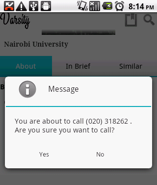
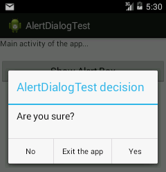
Types of dialogs
- Android has a
Dialog class with subclasses including:
 |
|
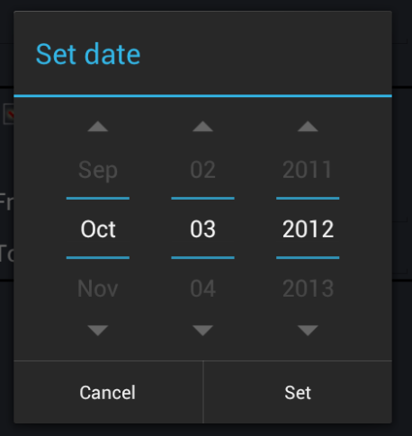 |
AlertDialog |
CharacterPickerDialog |
DatePickerDialog |
| 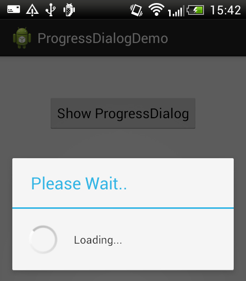 |
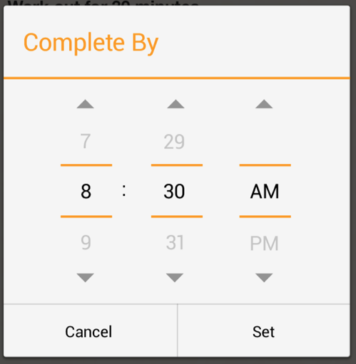 |
|
ProgressDialog |
TimePickerDialog |
Building a dialog
- Create a dialog in your activity class with a dialog builder.
- The builder has many
set methods to customize the dialog.
- When ready,
create() the dialog and show() it.
// in MyActivity.java
AlertDialog.Builder builder = new AlertDialog.Builder();
builder.setTitle("My Dialog");
builder.setMessage("Welcome to my app!");
...
AlertDialog dialog = builder.create();
dialog.show();
Dialog builder methods
()
| Method |
Description |
setCancelable(bool) |
whether Cancel button should show |
setIcon(id) |
drawable icon on the dialog |
setItems(items, listener) |
items to display as a list |
setMessage("text") |
text to display in dialog |
setMultiChoiceItems(items,
checkedItems, listener) |
items to display as checkboxes |
setNegativeButton("text", listener) |
text / event handler for No button |
setPositiveButton("text", listener) |
text / event handler for Yes/OK button |
setSingleChoiceItems(items,
checkedIndex, listener) |
items to display as radio buttons |
setTitle("text") |
title text on top of dialog |
setView(view) |
defines a custom dialog layout |
create() |
builds and returns the dialog |
show(); |
builds/returns dialog and shows it |
- methods that accept a string or array can also take a resource ID
Attaching listeners
AlertDialog.Builder builder = new AlertDialog.Builder();
...
builder.setPositiveButton("OK",
new DialogInterface.OnClickListener() {
@Override
public void onClick(DialogInterface dialog, int id) {
// code to run when OK is pressed
}
});
builder.setNegativeButton("Cancel",
new DialogInterface.OnClickListener() {
@Override
public void onClick(DialogInterface dialog, int id) {
// code to run when Cancel is pressed
}
});
Listening to a list of items
AlertDialog.Builder builder = new AlertDialog.Builder();
...
String[] items = {"Leo", "Mike", "Don", "Raph"};
builder.setItems(items,
new DialogInterface.OnClickListener() {
@Override
public void onClick(DialogInterface dialog, int index) {
// code to run when the item at this index is pressed
}
});
// for radio buttons: .setSingleChoiceItems
// still need to call setPositiveButton, etc.
Listening to checkbox items
AlertDialog.Builder builder = new AlertDialog.Builder();
...
String[] items = {"lettuce", "tomato", "cheese", "mayo"};
builder.setMultiChoiceItems(items,
new DialogInterface.OnMultiChoiceClickListener() {
@Override
public void onClick(DialogInterface dialog, int index,
boolean isChecked) {
// code to run when the item at this index is clicked
}
});
// still need to call setPositiveButton, etc.
Lib: SimpleDialog

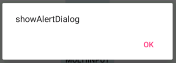
showAlertDialog
|
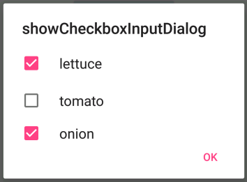
showCheckboxInputDialog
|
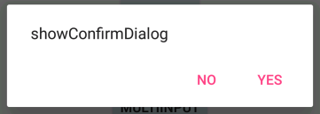
showConfirmDialog
|
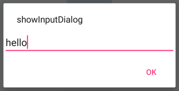
showInputDialog
|
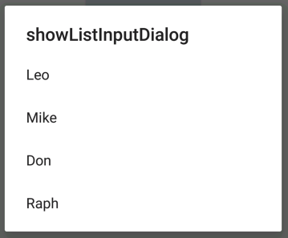
showListInputDialog
|
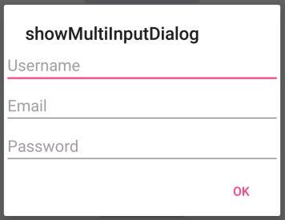
showMultiInputDialog
|
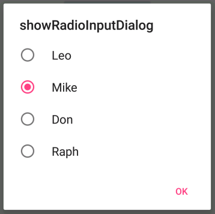
showRadioInputDialog
|
|
- (many methods can accept params to customize behavior)
- (others:
showDate/TimeInputDialog, showProgressDialog)
Lib: listen for dialog events
| Method |
Description |
onAlertDialogClose(dialog) |
called when alert dialog closes |
onDialogCancel(dialog) |
called when any dialog is canceled |
onInputDialogClose(dialog, input) |
called when input / list / radio dialog closes |
onMultiInputDialogClose(dialog,
inputs) |
called when checkbox / multi-input closes |
Alert dialog example
// example of showInputDialog (in your activity class)
SimpleDialog.with(this).showInputDialog("What's your name?");
...
@Override
public void onInputDialogClose(AlertDialog dialog, String input) {
toast("The user's name is " + input);
}
// example of showMultiInputDialog (in your activity class)
SimpleDialog.with(this).showMultiInputDialog(
"Username", "Email", "Password");
...
@Override
public void onMultiInputDialogClose(AlertDialog dialog,
String[] inputs) {
toast("username: " + inputs[0]);
toast("email: " + inputs[1]);
toast("password: " + inputs[2]);
}
More dialog methods
| Method |
Description |
setDialogsCancelable(bool); |
whether dialogs should have Cancel button |
setDialogsIcon(id); |
ID of drawable to show as icon on dialogs |
setDialogsTitle("text"); |
text to show next to icon as dialogs' title |
// methods to further customize dialog appearance
SimpleDialog.with(this).setDialogsCancelable(true);
SimpleDialog.with(this).setDialogsIcon(
android.R.drawable.ic_dialog_alert);
SimpleDialog.with(this).setDialogsTitle("Security Warning");
SimpleDialog.with(this).showConfirmDialog("Unsafe! Continue?");
Options in strings.xml
<!-- res/values/strings.xml -->
<resources>
...
<!-- XML options to customize dialog appearance -->
<bool name="dialogCancelable">true</bool>
<string name="dialogDefaultTitle">Security Warning</string>
<drawable name="dialogIcon">@android:drawable/ic_dialog_alert</drawable>
</resources>
Custom dialogs
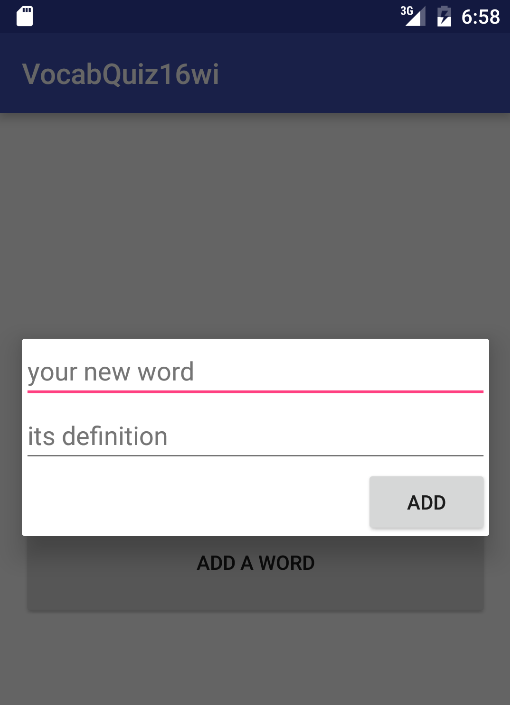
AlertDialog is useful but very limited.
- To make your own custom dialog with its own widgets, layout, and behavior:
- create a new fragment that extends DialogFragment (.java)
- create a layout for it (.xml)
- write the Java/XML code to create the fragment's UI and handle its events
- write the Java code in your activity to launch the dialog
Fragment layout, 2 text fields
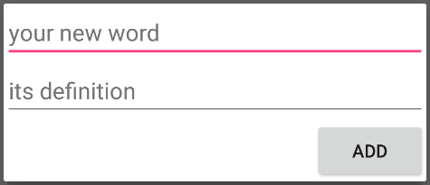
<LinearLayout ...
android:orientation="vertical"
android:minWidth="700dp"
tools:context="cs193a.vocabquiz.AddWordFragment">
<EditText
android:id="@+id/edit1"
android:hint="your new word"
android:layout_width="match_parent"
android:layout_height="wrap_content" />
<EditText
android:id="@+id/edit2"
android:hint="its definition"
android:layout_width="match_parent"
android:layout_height="wrap_content" />
<Button
android:id="@+id/add"
android:layout_gravity="right"
android:text="Add"
android:layout_width="wrap_content"
android:layout_height="wrap_content" />
</LinearLayout>
DialogFragment
// Create a Fragment class that extends DialogFragment
public class Name extends DialogFragment {
public View onCreateView(LayoutInflater inflater,
ViewGroup container, Bundle bundle) {
final View dialog = inflater.inflate(R.layout.layoutName,
container, false);
// any code to initialize event listeners, etc.
...
return dialog;
}
Why final?
// A final variable can be used inside nested
// anonymous classes declared in that code.
public class AddWordFragment extends DialogFragment {
public View onCreateView(LayoutInflater inflater,
ViewGroup group, Bundle bundle) {
final View dialog = inflater.inflate(R.layout.layout, group, false);
// any code to initialize event listeners, etc.
Button addButton = (Button) dialog.findViewById(R.id.add);
addButton.setOnClickListener(new View.OnClickListener() {
public void onClick(View v) {
EditText wordBox = (EditText) dialog.findViewById(R.id.edit1);
EditText defnBox = (EditText) dialog.findViewById(R.id.edit2);
String word = wordBox.getText().toString();
String defn = defnBox.getText().toString();
// now what?
}
});
return dialog;
}
}
Dialog[Fragment] methods
DialogFragment Method |
Description |
dismiss(); |
closes the dialog |
getActivity() |
returns the activity the dialog fragment is inside |
getDialog() |
returns the dialog the dialog fragment is inside |
show(FragmentManager, "tag"); |
causes the fragment and its dialog to appear |
|
|
Dialog Method |
Description |
cancel(); |
closes the dialog |
create(); |
creates the dialog |
dismiss(); |
closes the dialog |
findViewById(id) |
return a View inside the dialog |
hide(); |
make invisible but do not delete yet |
isShowing() |
returns true if not hidden |
setTitle("title"); |
title text at top of dialog |
show(); |
cause dialog to appear on screen |
Dialog → Activity communication
- When a dialog is finished, it often wants to send information back to the activity or fragment that created it.
- In our example, that is the word and definition the user typed.
- Two common ways of doing this:
- use
Intent / onActivityResult system
- create a custom event listener interface
- We'll explore option 1 now.
Dialog → Activity communication
public class AddWordFragment extends DialogFragment {
public View onCreateView(LayoutInflater inflater, ViewGroup group, Bundle bundle) {
final View dialog = inflater.inflate(R.layout.layout, group, false);
Button addButton = (Button) dialog.findViewById(R.id.add);
addButton.setOnClickListener(new View.OnClickListener() {
public void onClick(View v) {
EditText wordBox = (EditText) dialog.findViewById(R.id.edit1);
EditText defnBox = (EditText) dialog.findViewById(R.id.edit2);
String word = wordBox.getText().toString();
String defn = defnBox.getText().toString();
// send information back to activity using an intent
// (activity's onActivityResult method must be public)
MainActivity activity = (MainActivity) getActivity();
Intent intent = new Intent();
intent.putExtra("word", word);
intent.putExtra("definition", defn);
activity.onActivityResult(MainActivity.REQ_CODE_ADD_WORD,
Activity.RESULT_OK, intent);
}
});
return dialog;
}
}
Launching a custom dialog
// Write code like the following in your activity class.
// tell the dialog box to pop up
FragmentManager manager = getFragmentManager();
AddWordFragment fragment = new AddWordFragment();
fragment.show(manager, "add_word_fragment_name");
...
@Override
protected void onActivityResult(int requestCode, int resultCode,
Intent intent) {
super.onActivityResult(requestCode, resultCode, intent);
if (requestCode == REQ_CODE_ADD_WORD && resultCode == RESULT_OK) {
// extract returned parameters from the intent
String word = intent.getStringExtra("word");
String defn = intent.getStringExtra("definition");
addWordToFile(word, defn);
}
}